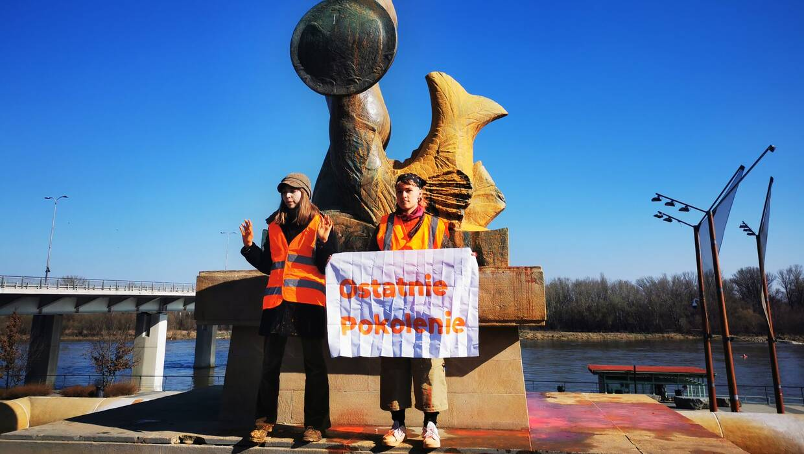

Tkaczyk News
SERWIS INFORMACYJNY
Aktywistki oblały farbą Warszawską Syrenkę
"To jest alarm" krzyknęły dwie młode kobiety, stojąc przed warszawską Syrenką. Po tych słowach oblały pomnik pomarańczową farbą. Jedna z aktywistek wyjaśniła następnie, że w ten sposób wraz ze swoją koleżanką chciały zwrócić w Dniu Kobiet uwagę wszystkich na zbliżającą się katastrofę klimatyczną. "Nasze ciężko wywalczone prawa wciąż są łamane. A będzie tylko gorzej. Katastrofa klimatyczna to wojny. Wojny to przemoc i gwałty. Nie możemy do tego dopuścić. Będąc tutaj, świętuję Dzień Kobiet. To jest mój sprzeciw. Jesteśmy ostatnim pokoleniem i będziemy o siebie walczyć" oświadczyła. Na miejscu interweniowała policja. Głos w sprawie zabrał już prezydent Warszawy Rafał Trzaskowski. "Mało kto traktuje kwestie klimatyczne tak poważnie jak Warszawa. Ale nie ma w stolicy miejsca na akty wandalizmu" napisał na Twitterze. Trzaskowski zapowiedział, że natychmiast po zakończeniu czynności przez funkcjonariuszy policji służby miejskie rozpoczną czyszczenie monumentu. Aktywistki skrytykowała też Anna Maria Żukowska z Lewicy. "Świetna akcja, dziewczyny z "Ostatniego Pokolenia", właśnie doprowadziłyście do wygenerowania dodatkowej ilości śladu węglowego, bo żeby domyć Syrenkę, potrzeba sporej ilości prądu, wody i agresywnych chemikaliów" zauważyła, po czym dodała ostro: "Powinnyście to szorować własnymi łapami". Cała sprawa obiła się głośnym echem po całej Polsce i sprawczynie jak widać zostały mocno skrytykowane przez wszystkich polityków niezależnie od przekonań w różnych kwestiach.
26.02.2024, 14:23